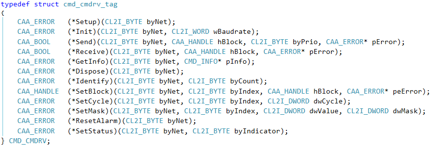

6.3.8.2. CANMiniDriver interface¶
A CANMiniDriver has to implement a certain interface. This interface is defined in CAACanMiniDriver.h (located in the Component folder) and will be described in the following chapters.

Figure 2: CANMiniDriver interface
Contents: